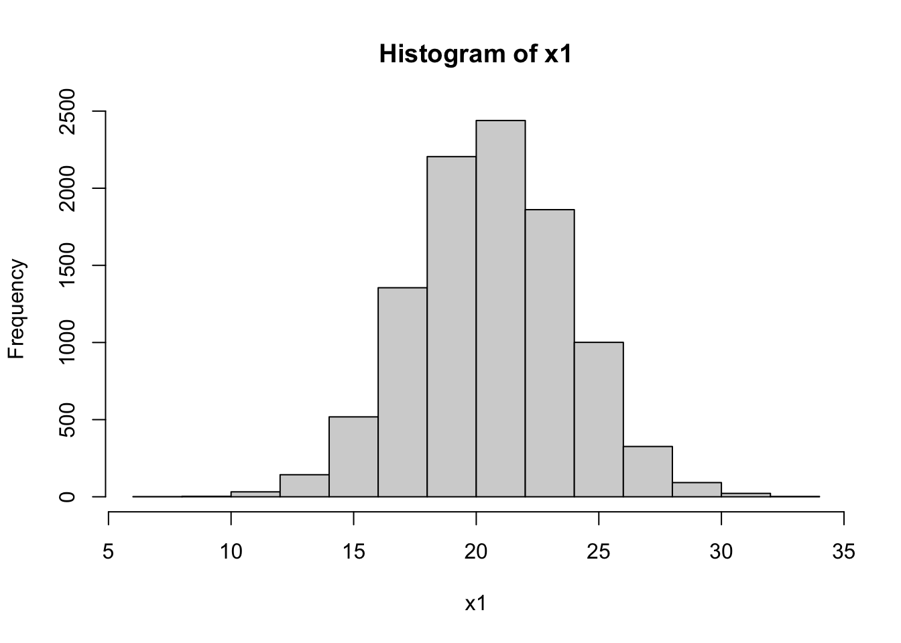
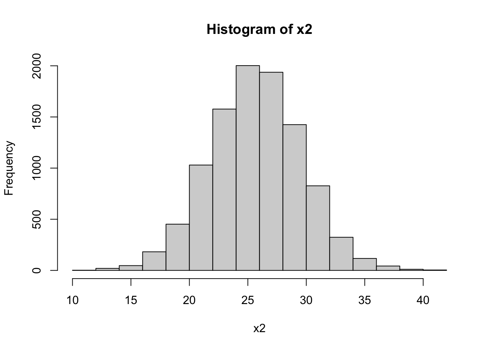

library(dplyr)
Attaching package: 'dplyr'The following objects are masked from 'package:stats':
filter, lagThe following objects are masked from 'package:base':
intersect, setdiff, setequal, unionlibrary(simulateGP)
library(systemfit)Loading required package: MatrixLoading required package: carLoading required package: carData
Attaching package: 'car'The following object is masked from 'package:dplyr':
recodeLoading required package: lmtestLoading required package: zoo
Attaching package: 'zoo'The following objects are masked from 'package:base':
as.Date, as.Date.numeric
Please cite the 'systemfit' package as:
Arne Henningsen and Jeff D. Hamann (2007). systemfit: A Package for Estimating Systems of Simultaneous Equations in R. Journal of Statistical Software 23(4), 1-40. http://www.jstatsoft.org/v23/i04/.
If you have questions, suggestions, or comments regarding the 'systemfit' package, please use a forum or 'tracker' at systemfit's R-Forge site:
https://r-forge.r-project.org/projects/systemfit/library(ggplot2)
n1 <- 10000
g1 <- rbinom(n1, 2, 0.3)
n2 <- 10000
g2 <- rbinom(n2, 2, 0.7)
x_m1 <- 20
x_m2 <- 24
x_sd1 <- 0.15
x_sd2 <- 0.15
# beta is percentage change from the mean
b <- 1.05
x1 <- x_m1 * b^g1 * rnorm(n1, mean=1, sd=x_sd1)
x2 <- x_m2 * b^g2 * rnorm(n2, mean=1, sd=x_sd2)
hist(x1)
hist(x2)
sd(x1)[1] 3.175459sd(x2)[1] 3.911279